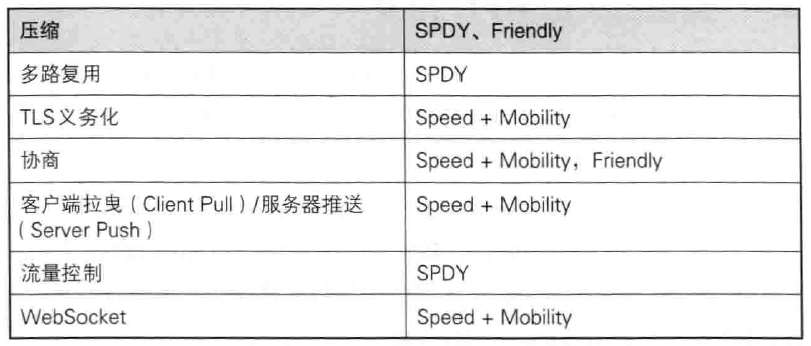

本文经过借鉴书籍资料、他人博客、牛客网面经总结出的知识点
1.http和https
1.1 http是什么？
超文本传输协议，是互联网上应用最为广泛的一种网络协议，是一个客户端和服务器端请求和应答的标准（TCP），用于从WWW服务器传输超文本到本地浏览器的传输协议，它可以使浏览器更加高效，使网络传输减少。
1.2 https是什么？
是以安全为目标的HTTP通道，简单讲是HTTP的安全版，即HTTP下加入SSL层，HTTPS的安全基础是SSL，因此加密的详细内容就需要SSL。
1.3 https的工作原理
https的SSL加密是在传输层实现的
客户端在使用https方式与Web服务器通信时有以下几个步骤，如图所示。

客户使用https url访问服务器，则要求web 服务器建立ssl链接。
web服务器接收到客户端的请求之后，会将网站的证书（证书中包含了公钥），返回或者说传输给客户端。
客户端和web服务器端开始协商SSL链接的安全等级，也就是加密等级。
客户端浏览器通过双方协商一致的安全等级，建立会话密钥，然后通过网站的公钥来加密会话密钥，并传送给网站。
web服务器通过自己的私钥解密出会话密钥。
web服务器通过会话密钥加密与客户端之间的通信。
1.4 https和http的区别
http传输的数据都是未加密的，也就是明文的，网景公司设置了SSL协议来对http协议传输的数据进行加密处理，简单来说https协议是由http和ssl协议构建的可进行加密传输和身份认证的网络协议，比http协议的安全性更高。
主要的区别如下：
（1）http是明文传输，https则是具有安全性的SSL加密传输协议；
（2）http无法进行身份验证，而https可以通过CA证书进行身份验证，但成本提高了；
（3）http无法保证传输信息的完整性，即传输过程中有可能遭篡改；
（4）端口不同：一般而言，http协议的端口是80，https协议的端口是443
1.5 https的优点
使用HTTPS协议可认证用户和服务器，确保数据发送到正确的客户机和服务器；
HTTPS协议是由SSL+HTTP协议构建的可进行加密传输、身份认证的网络协议，要比http协议安全，可防止数据在传输过程中不被窃取、改变，确保数据的完整性。
HTTPS是现行架构下最安全的解决方案，虽然不是绝对安全，但它大幅增加了中间人攻击的成本。
谷歌曾在2014年8月份调整搜索引擎算法，并称“比起同等HTTP网站，采用HTTPS加密的网站在搜索结果中的排名将会更高”。
1.6 https的缺点
https握手阶段比较费时，会使页面加载时间延长50%，增加10%~20%的耗电。
https缓存不如http高效，会增加数据开销。
SSL证书也需要钱，功能越强大的证书费用越高。
SSL证书需要绑定IP，不能再同一个ip上绑定多个域名，ipv4资源支持不了这种消耗
2. 谈一下TCP

序列号seq：占4个字节，用来标记数据段的顺序，TCP把连接中发送的所有数据字节都编上一个序号，第一个字节的编号由本地随机产生；给字节编上序号后，就给每一个报文段指派一个序号；序列号seq就是这个报文段中的第一个字节的数据编号。
确认号ack：占4个字节，期待收到对方下一个报文段的第一个数据字节的序号；序列号表示报文段携带数据的第一个字节的编号；而确认号指的是期望接收到下一个字节的编号；因此当前报文段最后一个字节的编号+1即为确认号。
确认ACK：占1位，仅当ACK=1时，确认号字段才有效。ACK=0时，确认号无效
同步SYN：连接建立时用于同步序号。当SYN=1，ACK=0时表示：这是一个连接请求报文段。若同意连接，则在响应报文段中使得SYN=1，ACK=1。因此，SYN=1表示这是一个连接请求，或连接接受报文。SYN这个标志位只有在TCP建产连接时才会被置1，握手完成后SYN标志位被置0。
终止FIN：用来释放一个连接。FIN=1表示：此报文段的发送方的数据已经发送完毕，并要求释放运输连接
PS：ACK、SYN和FIN这些大写的单词表示标志位，其值要么是1，要么是0；ack、seq小写的单词表示序号。
SYN：请求建立连接，并在其序列号的字段进行序列号的初始值设定。建立连接，设置为1

2.1 TCP的三次握手和四次挥手
（1）三次握手过程如图：

第一次握手：建立连接时，客户端发送syn包（syn=x）到服务器，并进入SYN_SENT状态，等待服务器确认；SYN：同步序列编号（Synchronize Sequence Numbers）。
第二次握手：服务器收到syn包，必须确认客户的SYN（ack=x+1），同时自己也发送一个SYN包（syn=y），即SYN+ACK包，此时服务器进入SYN_RECV状态；
第三次握手：客户端收到服务器的SYN+ACK包，向服务器发送确认包ACK(ack=y+1），此包发送完毕，客户端和服务器进入ESTABLISHED（TCP连接成功）状态，完成三次握手。
（2）四次挥手过程如图：

1）客户端进程发出连接释放报文，并且停止发送数据。释放数据报文首部，FIN=1，其序列号为seq=u（等于前面已经传送过来的数据的最后一个字节的序号加1），此时，客户端进入FIN-WAIT-1（终止等待1）状态。 TCP规定，FIN报文段即使不携带数据，也要消耗一个序号。
2）服务器收到连接释放报文，发出确认报文，ACK=1，ack=u+1，并且带上自己的序列号seq=v，此时，服务端就进入了CLOSE-WAIT（关闭等待）状态。TCP服务器通知高层的应用进程，客户端向服务器的方向就释放了，这时候处于半关闭状态，即客户端已经没有数据要发送了，但是服务器若发送数据，客户端依然要接受。这个状态还要持续一段时间，也就是整个CLOSE-WAIT状态持续的时间。
3）客户端收到服务器的确认请求后，此时，客户端就进入FIN-WAIT-2（终止等待2）状态，等待服务器发送连接释放报文（在这之前还需要接受服务器发送的最后的数据）。
4）服务器将最后的数据发送完毕后，就向客户端发送连接释放报文，FIN=1，ack=u+1，由于在半关闭状态，服务器很可能又发送了一些数据，假定此时的序列号为seq=w，此时，服务器就进入了LAST-ACK（最后确认）状态，等待客户端的确认。
5）客户端收到服务器的连接释放报文后，必须发出确认，ACK=1，ack=w+1，而自己的序列号是seq=u+1，此时，客户端就进入了TIME-WAIT（时间等待）状态。注意此时TCP连接还没有释放，必须经过2∗∗MSL（最长报文段寿命）的时间后，当客户端撤销相应的TCB后，才进入CLOSED状态。
6）服务器只要收到了客户端发出的确认，立即进入CLOSED状态。同样，撤销TCB后，就结束了这次的TCP连接。可以看到，服务器结束TCP连接的时间要比客户端早一些。
2.2 TCP和UDP的区别
TCP：提供的是面向连接、可靠的字节流服务，即客户端和服务器端传输数据之前必须先进行TCP三次握手连接，才能传输数据。并且提供超时重发，丢弃重复数据，检验数据，流量控制等功能，保证数据能从一端传到另一端。
UDP（User Data Protocol，用户数据报协议）是一个简单的面向数据报的运输层协议。它不提供可靠性，只是把应用程序传给IP层的数据报发送出去，但是不能保证它们能到达目的地。由于UDP在传输数据报前不用再客户和服务器之间建立一个连接，且没有超时重发等机制，所以传输速度很快。UDP报头如下图：

TCP和UDP的区别：
（1）TCP面向连接（如打电话要先拨号建立连接）;UDP是无连接的，即发送数据之前不需要建立连接
（2）TCP提供可靠的服务。也就是说，通过TCP连接传送的数据，无差错，不丢失，不重复，且按序到达;UDP尽最大努力交付，即不保 证可靠交付
（3）TCP面向字节流，实际上是TCP把数据看成一连串无结构的字节流;UDP是面向报文的
UDP没有拥塞控制，因此网络出现拥塞不会使源主机的发送速率降低（对实时应用很有用，如IP电话，实时视频会议等）
（4）每一条TCP连接只能是点到点的;UDP支持一对一，一对多，多对一和多对多的交互通信
（5）TCP首部开销20字节;UDP的首部开销小，只有8个字节
（6）TCP的逻辑通信信道是全双工的可靠信道，UDP则是不可靠信道
3.WebSocket的实现和应用
HTTP瓶颈：
（1）一条连接上只可发送一个请求
（2）请求只能从客户端开始。客户端不可以接收除响应以外的指令
（3）请求/响应首部未经压缩就发送。首部信息越多延迟越大
（4）发送冗长的首部。每次互相发送相同的首部造成的浪费较多
（5）可任意选择数据压缩格式。非强制压缩发送
使用浏览器进行全双工通信的WebSocket
什么是WebSocket?
WebSocket是HTML5中的协议，支持持久连续，http协议不支持持久性连接。Http1.0和HTTP1.1都不支持持久性的链接，HTTP1.1中的keep-alive，将多个http请求合并为1个（减少重复建立tcp连接的次数，但一个请求只能对应一个响应，管线化可以使客户端不需要等待响应即发送下一次请求，但仍是一个请求对应一个响应）
主要特点：
（1）服务器端推送功能
（2）减少通信量：只要建立起WebSocket通信，就希望一直保持连接状态，和HTTP相比，不但每次连接时的总开销减少，而且由于WebSocket的首部信息很小，通信量也相应减少了
为了实现WebSocket通信，在HTTP连接建立以后，需要完成一次“握手”的步骤

4.HTTP请求的方式：
（1）GET：获取资源
（2）POST：传输实体主体
（3）PUT：传输文件：就像FTP协议的文件上传一样，要求在请求报文的主体中包含文件内容，然后保存到请求URI指定的位置。但是鉴于HTTP/1.1的PUT方法自身不带验证机制，任何人都可以上传文件，存在安全性问题，因此一般的Web网站不使用该方法。
（4）HEAD：获得报文首部：用于确认URI的有效性及资源更新的日期时间等
（5）DELETE：删除文件：按照请求URI删除指定的资源（不带验证机制，一般不使用）
（6）OPTIONS：询问支持的方法：用来查询针对请求URI指定的资源支持的方法
（7）TRACE：追踪路径：让Web服务器端将之前的请求通信环回给客户端，客户端通过TRACE方法可以查询发送出去的请求是怎样被加工/篡改的，但是该方法 不常用，易引发XST（Cross-Site Tracing,跨站追踪）攻击
（8）CONNECT：要求用隧道协议连接代理：要求在与代理服务器通信时建立隧道，实现用隧道协议进行TCP通信。主要使用SSL（Secure Sockets Layer,安全套接层）和TLS（Transport Layer Security，传输层安全）协议把通信内容加密后经网络隧道传输
4.1 HEAD方法：
head：类似于get请求，只不过返回的响应中没有具体的内容，用户获取报头
options：允许客户端查看服务器的性能，比如说服务器支持的请求方式等等。
4.2 GET和POST的区别：

5.简单说一下HTTP2.0
6.一个图片url访问后直接下载怎样实现？
7.说一下web Quality（无障碍）
8.补充400和401、403状态码
常用的HTTP状态码
状态码类别：
1XX：Information（信息性状态码）：接收的请求正在处理
2XX：Success（成功状态码）：请求正常处理完毕
200 OK：表示从客户端发来的请求在服务器端被正常处理了
204 No Content：表示服务器接收的请求已成功处理，但在返回的响应报文中不含实体的主体部分
206 Partial Content：表示客户端进行了范围请求，而服务器成功执行了这部分的GET请求
3XX：Redirection（重定向状态码）：需要进行附加操作以完成请求
301 Moved Permanently：永久性重定向，该状态码表示请求的资源已被分配了新的URI，以后应使用资源现在所指的URI
302 Found：临时性重定向，该状态码表示请求的资源已被分配了新的URI，希望用户本次能使用新的URI访问
303 See Other：与302状态码有着相同功能，但303状态码明确表示客户端应当采用GET方法获取资源，这点与302有区别
304 Not Modified（与重定向无关）：表示客户端发送附带条件的请求时，服务器端允许请求访问资源，但未满足条件的情况，不包含任何响应的主体部分(如协商缓存机制中的：If-Modified-Since和If-None-Match)
307 Temporary Redirect（临时重定向）：与302有着相同含义，遵守浏览器标准，不会从POST变为GET
4XX：Client Error（客户端错误状态码）：服务器无法处理请求
400 Bad Request：表示请求报文中存在语法错误
401 Unauthorized：表示发送的请求需要有通过HTTP认证的认证信息，另外若之前已进行过一次HTTP请求，则表示用户认证失败
403 Forbidden：表明对请求资源的访问被服务器拒绝了
404 Not Found：表明服务器上无法找到请求的资源（也可以在服务器端拒绝请求且不想说明理由时使用）
405：
412 Precondition Failed :先决条件失败
5XX：Server Error（服务器错误状态码）：服务器处理请求出错
500 Internal Server Error：该状态码表示服务器端在执行请求时发生了错误
502
503 Service Unavailable：表明服务器端暂时处于超负载或正在进行停机维护，现在无法处理请求
9. fetch发送2次请求的原因
Fetch API 提供了一个 JavaScript 接口，用于访问和操纵 HTTP 管道的一些具体部分，例如请求和响应。它还提供了一个全局 fetch() 方法，该方法提供了一种简单，合理的方式来跨网络异步获取资源。
这种功能以前是使用 XMLHttpRequest 实现的。Fetch 提供了一个更理想的替代方案，可以很容易地被其他技术使用，例如 Service Workers。Fetch 还提供了专门的逻辑空间来定义其他与 HTTP 相关的概念，例如 CORS 和 HTTP 的扩展。
请注意，fetch 规范与 jQuery.ajax() 主要有三种方式的不同：
- 当接收到一个代表错误的 HTTP 状态码时，从
fetch()返回的 Promise 不会被标记为 reject， 即使响应的 HTTP 状态码是 404 或 500。相反，它会将 Promise 状态标记为 resolve （但是会将 resolve 的返回值的ok属性设置为 false ），仅当网络故障时或请求被阻止时，才会标记为 reject。 fetch()不会接受跨域 cookies；你也不能使用fetch()建立起跨域会话。其他网站的Set-Cookie头部字段将会被无视。fetch不会发送 cookies。除非你使用了credentials 的初始化选项。（自 2017 年 8 月 25 日以后，默认的 credentials 政策变更为same-origin。Firefox 也在 61.0b13 版本中进行了修改）
特点:
（1）第一个参数是URL:
（2）第二个是可选参数，可以控制不同配置的 init 对象
（3）使用了 JavaScript Promises 来处理结果/回调:
配置：
Promise fetch(String url [, Object options]);
Promise fetch(Request req [, Object options]);
面试题目：
fetch发送post请求的时候，总是发送2次，第一次状态码是204，第二次才成功？
原因很简单，因为你用fetch的post请求的时候，导致fetch 第一次发送了一个Options请求，询问服务器是否支持修改的请求头，如果服务器支持，则在第二次中发送真正的请求
10. Web跨域请求及解决方案
10.1 跨域请求：（是浏览器的同源策略所导致的）就是指当前发起请求的域与所请求资源所在的域不同
同域：协议+域名+端口均相同
主域名：csdn.net
子域名：blog.csdn.net
URL的构成：http：//主机名.域名（端口号、参数、查询等可选）
域名的级别：
浏览器的同源策略（SOP:Same-origin Policy）：为了防止XSS,CSRF(Cross-site request forgery:跨站请求伪造)：攻击的具体解释
CSRF攻击需要满足的条件：
（1）登录受信任网站A，并在本地生成Cookie。（如果用户没有登录网站A，那么网站B在诱导的时候，请求网站A的api接口时，会提示你登录）
（2）在不登出A的情况下，访问危险网站B（其实是利用了网站A的漏洞）。
CSRF攻击是源于WEB的隐式身份验证机制！WEB的身份验证机制虽然可以保证一个请求是来自于某个用户的浏览器，但却无法保证该请求是用户批准发送的
XSS攻击的核心原理是：不需要你做任何的登录认证，它会通过合法的操作（比如在url中输入、在评论框中输入），向你的页面注入脚本（可能是js、hmtl代码块等）。
最后导致的结果可能是：
盗用Cookie破坏页面的正常结构，插入广告等恶意内容D-doss攻击
XSS的防范方式：
（1）编码：将用户输入的数据以纯文本形式输出，不会引起JS执行
（2）过滤：移除用户输入的和事件相关的属性。如onerror可以自动触发攻击，还有onclick等。（总而言是，过滤掉一些不安全的内容）移除用户输入的Style节点、Script节点、Iframe节点。（尤其是Script节点，它可是支持跨域的呀，一定要移除）。
（3）校正：避免直接对HTML Entity进行解码。使用DOM Parse转换，校正不配对的DOM标签。
CSRF和XSS的区别：
区别一：
CSRF：需要用户先登录网站A，获取 cookie。XSS：不需要登录。
区别二：（原理的区别）
CSRF：是利用网站A本身的漏洞，去请求网站A的api。XSS：是向网站 A 注入 JS代码，然后执行 JS 里的代码，篡改网站A的内容。
同源策略（Same origin policy）是一种约定，它是浏览器最核心也是最基本的安全功能。同源策略限制了来自不同源（相对于当前页面而言）的document或script，对当前document的某些属性进行读取或是设置，举例来说，A网站（www.aaa.com）上有某个脚本，在B网站（www.bbb.com）未曾加载该脚本时，该脚本不能读取或是修改B网站的DOM节点数据。
在浏览器中，<img>、<iframe>、<link>等标签都可以跨域加载资源，而不受同源策略的限制。这些带“src”的标签每次加载时，实际上是由浏览器发起了一次GET请求。不同于XMLHttpRequest的是，通过src属性加载的资源，浏览器限制了JavaScript的权限，使其不能读写返回的内容。
出于安全考虑，浏览器会限制从JS脚本发起的跨源HTTP请求。 例如，XMLHttpRequest和Fetch API都遵循同源策略。
在同源策略影响下，域名A向域名B发送Ajax请求，或操作Cookie、LocalStorage、indexDB等数据,或操作dom，js就会受到限制，但请求css，js等静态资源不受限制

浏览器同源策略主要的限制范围:
（1） Cookie、LocalStorage、sessionStorage和 IndexDB 无法读取。
（2） DOM 节点无法读取和设置。
（3） AJAX 请求不能发送。
10.2 跨域问题的解决方案：参考
解决跨域的思路
- 被调用方解决： 被调用方解决-支持跨域（根据http协议关于跨域方面的要求，增加响应头信息，告诉浏览器允许被跨域调用）（因为在发生跨域请求时首先调用方发送一个预检请求（OPTIONS请求），这个请求就会被带上允许跨越的请求头信息）
- 调用方解决：使用代理做调用解决跨域问题-隐藏跨域（利用nginx的反向代理，使访问同一个域名不同的资源路径会代理到不同的服务器上，每个跨域的请求都会带上origin请求头字段，因为访问的资源都是同域名下的，所以不会产生跨越问题）
（1）JSONP跨域：JSON是一种数据格式，JSONP是一种数据调用的方式
jsonp就是利用了script标签的src属性是没有跨域的限制的，从而达到跨域访问的目的。因此它的最基本原理就是：动态添加一个<script>标签来实现。详细解释，可以使用ajax中包装的jsonp
ajax与jsonp的异同：
1、ajax和jsonp这两种技术在调用方式上”看起来”很像，目的也一样，都是请求一个url，然后把服务器返回的数据进行处理，因此jquery和ext等框架都把jsonp作为ajax的一种形式进行了封装。
2、但ajax和jsonp其实本质上是不同的东西。ajax的核心是通过XmlHttpRequest获取非本页内容，而jsonp的核心则是动态添加
jsonp缺点：只能使用get请求，不推荐使用
（2）CORS（Cross-Origin Resource Sharing）跨域资源共享：使用较广泛
跨域资源共享(CORS) 是一种机制，它使用额外的 HTTP 头来告诉浏览器 让运行在一个 origin (domain) 上的Web应用被准许访问来自不同源服务器上的指定的资源。当一个资源从与该资源本身所在的服务器不同的域或端口请求一个资源时，资源会发起一个跨域 HTTP 请求。
Cross-Origin Resource Sharing跨域资源共享,应该算是现在比较推荐的跨域处理方案.不仅适用于各种Method,而且更加方便和简单
目前，所有浏览器都支持该功能，IE浏览器不能低于IE10。
CORS分为两类：简单请求和非简单请求，详细介绍看这里 ，如：
简单请求：
1 | GET /cors HTTP/1.1 |

非简单请求会发出一次预检测请求，返回码是204，预检测通过才会真正发出请求，这才返回200。这里通过前端发请求的时候增加一个额外的headers来触发非简单请求。
（3）window.postMessage
1 | otherWindow.postMessage(message, targetOrigin, [transfer]); |
otherwindow:其他窗口的一个引用，比如iframe的contentWindow属性、执行window.open返回的窗口对象、或者是命名过或数值索引的window.frames。
postMessage是HTML5 XMLHttpRequest Level 2中的API，且是为数不多可以跨域操作的window属性之一，它可用于解决以下方面的问题：
- iframe嵌套页面跨域通信
- 页面和其打开的新窗口的通信
- 多窗口之间消息传递
用法：
postMessage(data,origin)方法接受两个参数，
data：需要传递的数据，html5规范支持任意基本类型或可复制的对象，但部分浏览器只支持字符串，所以传参时最好用JSON.stringify()序列化。
origin：协议+主机+端口号，也可以设置为”*”，表示可以传递给任意窗口，如果要指定和当前窗口同源的话设置为”/“。
（4）document.domain：只适合主域名相同，但子域名不同的iframe跨域
实现原理：两个页面都通过js强制设置document.domain为基础主域，就实现了同域。
（5）window.name：参考
只要是在同一窗口打开的，即使窗口的location发生的变化，window.name也不会改变，因此可以将跨域资源的数据以JSON.Stringfy的格式传入window.name，再将其location改为同源，即可获取数据
（6）WebSocket协议跨域：websoket协议天然支持跨域
（7）Nginx代理跨域
想一下，如果我们请求的时候还是用前端的域名，然后有个东西帮我们把这个请求转发到真正的后端域名上，不就避免跨域了吗？这时候，Nginx出场了。
Nginx介绍：
正向代理：正向代理最大的特点是客户端非常明确要访问的服务器地址；服务器只清楚请求来自哪个代理服务器，而不清楚来自哪个具体的客户端；正向代理模式屏蔽或者隐藏了真实客户端信息。
反向代理：主要用于服务器集群分布式部署的情况下，反向代理隐藏了服务器的信息！
负载均衡
例如www.a.com/index.html页面去调用www.b.com/service.jsp，可以通过写一个接口www.a.com/service.jsp,由这个接口在后端去调用www.b.com/service.jsp并取到返回值，然后再返回给index.html。
11.从在浏览器输入url到页面显示经过的过程：
12. 浏览器页面渲染流程
12.1浏览器从HTTP服务器获取html文档，到呈现页面给用户，会经过以下几个步骤：
（1）解析文档构建DOM树
浏览器的解析内容可以分为三个部分：
HTML/XHTML/SVG：解析这三种文件后，会生成DOM树（DOM Tree）
CSS：解析样式表，生成CSS规则树（CSS Rule Tree）
JavaScript：解析脚本，通过DOM API和CSSOM API操作DOM Tree和CSS Rule Tree，与用户进行交互。
以上三类文件的执行顺序会根据其在文档中的位置及其标签属性的不同而有异同，具体在后文进行讨论。
（2）构建渲染树
解析文档完成后，浏览器引擎会将 CSS Rule Tree 附着到DOM Tree 上，并根据DOM Tree 和 CSS Rule Tree构造 Rendering Tree（渲染树）。此处需要注意：
Render Tree和DOM Tree的区别在于，类似Head或display：node之类的东西不会放在渲染树中；
将CSS Rule Tree匹配到DOM Tree需要解析CSS的选择器，为了提高该过程的性能，DOM树应该尽量小，CSS Selector应该尽量使用id和class，避免过度层叠。
（3）布局与绘制渲染树
解析position, overflow, z-index等等属性，计算每一个渲染树节点的位置和大小，此过程被称为reflow。最后调用操作系统的Native GUI API完成绘制（repain）。注意：
渲染树的节点，在Gecko中称为frame，而在webkit中称为renderer；
reflow和repaint是两个不同的概念，其区别会在后文进行探讨。
12.2 脚本和样式文件对页面渲染的影响：
浏览器从服务器获取文档并从上到下进行解析，在脚本文件标签不包含defer和async属性的情况下，会按照如下规则执行文档内容：
（1）解析html文档，遇到HTML标签时，构建DOM树
（2）在构建DOM的过程中，如果遇到外联的样式声明或脚本声明，则暂停文档解析，创建新的网络连接，开始下载样式文件和脚本文件
（3）样式文件下载完成后，构建CSS Rule DOM，脚本文件下载完成后，解释并立即执行。
（4）构建DOM的同时，结合CSS规则树完成页面渲染。
（5）如果DOM树先于CSS规则树构建完成，则在CSS规则树构建完成后，页面会发生一次重绘，将新构建的CSS规则应用于渲染树。
脚本文件对文档解析的影响：
在这个过程中，脚本文件的下载和执行是与文档解析同步进行的，脚本文件的下载和执行都会阻塞文档的解析，如果控制得不好，在用户体验上就会造成一定程度的影响。
脚本文件的defer和async属性
为了防止脚本加载使浏览器页面阻塞，妨碍用户体验。应该合理使用<script>标签的defer属性和async属性。这两个属性用于调整脚本的下载和执行顺序，使其不阻塞页面加载。
defer：开启新的线程下载脚本文件，并使脚本在文档解析完成后执行。
（1）defer只适用于外联脚本，如果script标签没有指定src属性，只是内联脚本，不要使用defer
（2）如果有多个声明了defer的脚本，则会按顺序下载和执行
（3）defer脚本会在DOMContentLoaded和load事件之前执行
async：异步下载脚本文件，下载完毕立即解释执行代码。 HTML5的新增属性。
（1）只适用于外联脚本，这一点和defer一致
（2）如果有多个声明async的脚本，其下载和执行都是异步的，不能确保彼此的先后顺序
（3）async会在load事件之前执行，但并不能确保与DOMContentLoaded的执行先后顺序
下面这张图清楚的阐述了<script>脚本在无任何特殊属性、具有defer属性、具有async属性三种情况下的下载执行与文档解析的关系。其中绿色带包文档解析线程；蓝色代表脚本下载线程；红色代表脚本执行线程。

综上所述，defer属性和async属性都能防止脚本下载阻塞页面渲染。如果脚本之间没有依赖关系，可以使用async属性，如果脚本之间有依赖关系，应使用defer属性。如果同时使用async和defer属性，后者不起作用，浏览器行为由async属性决定。如果不想使用这两个属性，也可将<script>标签防止在</body>之前，达到同样的效果。
CSS对页面渲染的影响：
前端页面渲染时会根据DOM结构生成一个DOM树,然后加上CSS样式生成渲染树。如果CSS文件放在<head>标签中，则CSS Rule Tree会先于DOM树完成构建，之后浏览器就可以边构建DOM树边完成渲染；反之，CSS文件放在所有页面标签之后，比如<body/>之前，那么当DOM树构建完成了，渲染树才构建，浏览器不得不再重新渲染整个页面，这样造成了资源的浪费。而且页面还可能会出现闪跳的感觉，或者白屏或者布局混乱或者样式很丑，直到CSS加载完成，页面重绘才能恢复正常。
因此，一般来讲，css标签应放在标签之间。但如果css文件较大，会让首页白屏时间更长，所以并不是说把css都放顶部是一个完美的方法。权衡利弊，应该把必须的css（js）放顶部，把不那么重要的css（js）放底部.
12.3 回流和重绘
reflow（回流）
DOM结构中的各个元素都有自己的盒子模型，浏览器根据各样式计算元素的尺寸和位置，构建渲染树的过程称之为reflow。当渲染树节点的尺寸，布局，隐藏属性发生改变时，会触发reflow操作，重新构建Render Tree。每个页面在第一次加载的时候，会发生一次回流。
完成回流后，浏览器会重新绘制受影响的部分到屏幕中，因此，回流必定会导致重绘。
repain（重绘）
当各种盒子的位置、大小以及其他属性，例如颜色、字体大小等都确定下来后，浏览器便把这些元素都按照各自的特性进行绘制，于是页面的内容出现了，这个过程称之为repaint。
会触发reflow的操作：
Reflow 的成本比 Repaint 的成本高得多。DOM Tree 里的每个结点都会有 reflow 方法，一个结点的 reflow 很有可能导致子结点，甚至父点以及同级结点的 reflow。在一些高性能的电脑上也许还没什么，但是如果 reflow 发生在手机上，那么这个过程是非常痛苦和耗电的。所以，下面这些动作会触发reflow操作，有很大可能会是成本比较高的。
增加、删除、修改 DOM 结点
移动 DOM 的位置
绘制动画
修改 CSS 样式
Resize 窗口的时候或是滚动
修改网页的默认字体
注：display:none 会触发 reflow，而 visibility:hidden 只会触发 repaint，因为没有发现位置变化
如何能将Reflow对性能的影响减到最小呢？
（1）不要一条一条地修改 DOM 的样式。与其这样，还不如预先定义好 css 的 class，然后修改 DOM 的 className;
（2）把 DOM 离线后修改。如: 使用 documentFragment 对象在内存里操作 DOM； 先把 DOM 设置为 display:none (有一次 repaint)，然后你想怎么改就怎么改。比如修改 100 次，然后再把他显示出来；克隆一个DOM 节点到内存里，然后想怎么改就怎么改，改完后，和在线的进行交换。
（3）千万不要使用 table 布局。因为可能很小的一个小改动会造成整个 table 的重新布局。
table标签的缺点：
12.4 onload事件和DOMContentLoaded事件
DOMContentLoaded事件是当初始HTML文档完全被加载和解析（即所有的DOM完全解析）时触发的，无需要等待样式表，图片，子框架完成加载。而onload事件要等页面所有元素，包括图片以及脚本等全部加载完成才触发，因此它比DOMContentLoaded要更晚执行。
在页面的图片很多，网络不好的情况下，从用户访问到onload触发可能需要很长的时间，此时如果在onload中加入许多初始化的动作, 必然会影响用户的体验。这事使用DOMContentLoaded事件代替onload事件是更合适的。
思考：我们为什么一再强调将css放在头部，将js文件放在尾部
在面试的过程中，经常会有人在回答页面的优化中提到将js放到body标签底部，原因是因为浏览器生成Dom树的时候是一行一行读HTML代码的，script标签放在最后面就不会影响前面的页面的渲染。那么问题来了，既然Dom树完全生成好后页面才能渲染出来，浏览器又必须读完全部HTML才能生成完整的Dom树，script标签不放在body底部是不是也一样，因为dom树的生成需要整个文档解析完毕。
其实现代浏览器为了更好的用户体验,渲染引擎将尝试尽快在屏幕上显示的内容。它不会等到所有HTML解析之前开始构建和布局渲染树。部分的内容将被解析并显示。也就是说浏览器能够渲染不完整的dom树和cssom，尽快的减少白屏的时间。假如我们将js放在header，js将阻塞解析dom，dom的内容会影响到First Paint，导致First Paint延后。所以说我们会将js放在后面，以减少First Paint的时间，但是不会减少DOMContentLoaded被触发的时间。
12.5 如何优化图片的加载
图片懒加载：参考
原理：
先将img标签的src链接设为同一张图片（比如空白图片），然后给img标签设置自定义属性（比如 data-src）,然后将真正的图片地址存储在data-src中，当JS监听到该图片元素进入可视窗口时，将自定义属性中的地址存储到src属性中。达到懒加载的效果。
这样做能防止页面一次性向服务器发送大量请求，导致服务器响应慢，页面卡顿崩溃等。
实现懒加载有四个步骤，如下：
1.加载loading图片
2.判断哪些图片要加载【重点】
3.隐形加载图片，先在内存中加载不显示
4.替换真图片
几个API函数
页可见区域宽： document.body.clientWidth;
网页可见区域高： document.body.clientHeight;
网页可见区域宽： document.body.offsetWidth (包括边线的宽);
网页可见区域高： document.body.offsetHeight (包括边线的宽);
网页正文全文宽： document.body.scrollWidth;
网页正文全文高： document.body.scrollHeight;
网页被卷去的高： document.body.scrollTop;
网页被卷去的左： document.body.scrollLeft;
网页正文部分上： window.screenTop;
网页正文部分左： window.screenLeft;
屏幕分辨率的高： window.screen.height;
屏幕分辨率的宽： window.screen.width;
屏幕可用工作区高度： window.screen.availHeight

第一种方法：
使用：
element.offsetTop：距父元素的距离，循环直到页面顶端，获取图片和页面顶端的距离
document.documentElement.scrollTop||document.body.scrollTop:卷起的高度
document.documentElement.clientHeight:属于DOM：可视区域的高度（不包括包括水平滚动栏和工具栏的高度）
window.innerHeight:属于BOM：获得的是可视区域的高度，同时包括横向滚动条的高度。(IE8以及低版本浏览器不支持)
代码实现：
1 | <!DOCTYPE html> |
第二种方法：使用API
1 | getBoundingClientRect()//获取元素的大小及位置，返回值是一个DOMRect对象 |

1 | var bound = el.getBoundingClientRect(); |
完整代码：
1 | var imgs = document.querySelectorAll('img'); |
13. web缓存：
13.1 宏观上，缓存可以分为私有缓存和共享缓存：
共享缓存：能被各级代理缓存的缓存
私有缓存：用户专享的，各级代理不能缓存的缓存
13.2 微观上，缓存可以分为四类：
13.2.1 浏览器缓存
13.2.2 代理服务器缓存
13.2.3 网关缓存
13.2.4 数据库缓存
14. http1.0，1.1，2.0
14.1 http1.0和http1.1:
14.1.1 http1.0和http1.1的一些区别：
HTTP1.0最早在网页中使用是在1996年，那个时候只是使用一些较为简单的网页上和网络请求上，而HTTP1.1则在1999年才开始广泛应用于现在的各大浏览器网络请求中，同时HTTP1.1也是当前使用最为广泛的HTTP协议。 主要区别主要体现在：
（1）缓存处理，在HTTP1.0中主要使用header里的If-Modified-Since,Expires来做为缓存判断的标准，HTTP1.1则引入了更多的缓存控制策略例如Entity tag，If-Unmodified-Since, If-Match, If-None-Match等更多可供选择的缓存头来控制缓存策略。
（2）带宽优化及网络连接的使用，HTTP1.0中，存在一些浪费带宽的现象，例如客户端只是需要某个对象的一部分，而服务器却将整个对象送过来了，并且不支持断点续传功能，HTTP1.1则在请求头引入了range头域，它允许只请求资源的某个部分，即返回码是206（Partial Content），这样就方便了开发者自由的选择以便于充分利用带宽和连接。
（3）错误通知的管理，在HTTP1.1中新增了24个错误状态响应码，如409（Conflict）表示请求的资源与资源的当前状态发生冲突；410（Gone）表示服务器上的某个资源被永久性的删除。
（4）Host头处理，在HTTP1.0中认为每台服务器都绑定一个唯一的IP地址，因此，请求消息中的URL并没有传递主机名（hostname）。但随着虚拟主机技术的发展，在一台物理服务器上可以存在多个虚拟主机（Multi-homed Web Servers），并且它们共享一个IP地址。HTTP1.1的请求消息和响应消息都应支持Host头域，且请求消息中如果没有Host头域会报告一个错误（400 Bad Request）。
（5）长连接，HTTP 1.1支持长连接（PersistentConnection）和请求的流水线（Pipelining）处理，在一个TCP连接上可以传送多个HTTP请求和响应，减少了建立和关闭连接的消耗和延迟，在HTTP1.1中默认开启Connection： keep-alive，一定程度上弥补了HTTP1.0每次请求都要创建连接的缺点。
14.1.2 HTTP1.X的缺点：
（1）HTTP/1.0一次只允许在一个TCP连接上发起一个请求，HTTP/1.1使用的流水线技术也只能部分处理请求并发，仍然会存在队列头阻塞问题，因此客户端在需要发起多次请求时，通常会采用建立多连接来减少延迟。
（2）单向请求，只能由客户端发起。
（3）请求报文与响应报文首部信息冗余量大。
（4）数据未压缩，导致数据的传输量大。
14.2 http2.0
以以下协议为基础：
SPDY:
HTTP Speed + Mobility：用于改善并提高移动端通信时的通信速度和性能
Network-Friendly HTTP Upgrade：在移动端通信时改善HTTP性能
HTTP/2.0 的7项技术和讨论

14.2.1 什么是http2.0?
主要基于SPDY，在不改动HTTP语义，方法，状态码及首部字段的情况下，大幅度提高了web性能
什么是SPDY协议？
SPDY是Speedy的谐音，意为“更快”。它是Google开发的基于TCP协议的应用层协议。目标是优化HTTP协议的性能，通过压缩、多路复用和优先级等技术，缩短网页的加载时间并提高安全性。SPDY协议的核心思想是尽量减少TCP连接数。SPDY并不是一种用于替代HTTP的协议，而是对HTTP协议的增强。
HTTP2.0和SPDY的区别
- HTTP2.0 支持明文 HTTP 传输，而 SPDY 强制使用 HTTPS
- HTTP2.0 消息头的压缩算法采用 HPACK，而非 SPDY 采用的 DEFLATE
14.2.2 HTTP2.0 特点
（1）二进制传输
HTTP2.0中所有加强性能的核心是二进制传输，在HTTP1.x中，我们是通过文本的方式传输数据。基于文本的方式传输数据存在很多缺陷，文本的表现形式有多样性，因此要做到健壮性考虑的场景必然有很多，但是二进制则不同，只有0和1的组合，因此选择了二进制传输，实现方便且健壮。
在HTTP2.0中引入了新的编码机制，所有传输的数据都会被分割，并采用二进制格式编码。

为了保证HTTP不受影响，那就需要在应用层（HTTP2.0）和传输层（TCP or UDP）之间增加一个二进制分帧层。在二进制分帧层上，HTTP2.0会将所有传输的信息分为更小的消息和帧，并采用二进制格式编码，其中HTTP1.x的首部信息会被封装到Headers帧，而Request Body则封装到Data帧。
（2）多路复用
在HTTP1.0中，我们经常会使用到雪碧图、使用多个域名等方式来进行优化，都是因为浏览器限制了同一个域名下的请求数量，当页面需要请求很多资源的时候，队头阻塞（Head of line blocking）会导致在达到最大请求时，资源需要等待其他资源请求完成后才能继续发送。
HTTP2.0中，有两个概念非常重要：帧（frame）和流（stream）。
帧是最小的数据单位，每个帧会标识出该帧属于哪个流，流是多个帧组成的数据流。
所谓多路复用，即在一个TCP连接中存在多个流，即可以同时发送多个请求，对端可以通过帧中的表示知道该帧属于哪个请求。在客户端，这些帧乱序发送，到对端后再根据每个帧首部的流标识符重新组装。通过该技术，可以避免HTTP旧版本的队头阻塞问题，极大提高传输性能。
（3）请求优先级（request prioritization）
多路复用带来一个新的问题是，在连接共享的基础之上有可能会导致关键请求被阻塞。SPDY允许给每个request设置优先级，这样重要的请求就会优先得到响应。比如浏览器加载首页，首页的html内容应该优先展示，之后才是各种静态资源文件，脚本文件等加载，这样可以保证用户能第一时间看到网页内容。
（4）Header压缩
在HTTP1.0中，我们使用文本的形式传输header，在header中携带cookie的话，每次都需要重复传输几百到几千的字节，这着实是一笔不小的开销。
在HTTP2.0中，我们使用了HPACK（HTTP2头部压缩算法）压缩格式对传输的header进行编码，减少了header的大小。并在两端维护了索引表，用于记录出现过的header，后面在传输过程中就可以传输已经记录过的header的键名，对端收到数据后就可以通过键名找到对应的值。
（5）服务器Push
在HTTP2.0中，服务端可以在客户端某个请求后，主动推送其他资源。
可以想象一下，某些资源客户端是一定会请求的，这时就可以采取服务端push的技术，提前给客户端推送必要的资源，就可以相对减少一点延迟时间。在浏览器兼容的情况下也可以使用prefetch。
（6）更安全
HTTP2.0使用了tls的拓展ALPN做为协议升级，除此之外，HTTP2.0对tls的安全性做了近一步加强，通过黑名单机制禁用了几百种不再安全的加密算法。
14.2.4 额外补充：QUIC
这里额外给大家介绍一个协议，是由Google基于UDP实现的同为传输层的协议，目标是希望替代TCP协议。
该协议支持多路复用，虽然说HTTP2.0也支持多路复用，但是下层仍然是TCP，因为TCP的重传机制，只要一个包丢失就得判断丢包并且重传，导致发生队头阻塞的问题，但是UDP没有这个限制。除此之外，它还有如下特点：
（1）实现了自己的加密协议，通过类似TCP的TFO机制实现0-RTT，当然TLS1.3已经实现了0-RTT。
（2）支持重传和纠错机制，在只丢失一个包的情况下不需要重传，使用纠错机制恢复丢失的包。
- 纠错机制：通过异或的方式，算出发出去的数据的异或值并单独发出一个包，服务端在发现有一个包丢失的情况下，通过其他数据包的异或值包算出丢失包。
- 在丢失两个包及以上的情况就是用重传机制，因为算不出来了。
14.3 附注：
14.3.1 HTTP2.0的多路复用和HTTP1.X中的长连接复用有什么区别？
- HTTP/1.* 一次请求-响应，建立一个连接，用完关闭；每一个请求都要建立一个连接；
- HTTP/1.1 Pipeling（流水线）解决方式为，若干个请求排队串行化单线程处理，后面的请求等待前面请求的返回才能获得执行机会，一旦有某请求超时等，后续请求只能被阻塞，毫无办法，也就是人们常说的线头阻塞；
- HTTP/2多个请求可同时在一个连接上并行执行。某个请求任务耗时严重，不会影响到其它连接的正常执行，如下图；

15. 浏览器内核
浏览器最重要的部分是浏览器的内核。浏览器内核是浏览器的核心，也称“渲染引擎”，用来解释网页语法并渲染到网页上。浏览器内核决定了浏览器该如何显示网页内容以及页面的格式信息。不同的浏览器内核对网页的语法解释也不同，因此网页开发者需要在不同内核的浏览器中测试网页的渲染效果。
浏览器内核又可以分为两部分：渲染引擎和JS引擎（随着JS引擎越来越独立，内核就倾向于只指渲染引擎）常见的浏览器内核可以分为四种：Trident,Gecko,Blink,Webkit
（1）IE浏览器内核：Trident内核，也是俗称的IE内核；
（2）Chrome浏览器内核：统称为Chromium内核或Chrome内核，以前是Webkit内核，现在是Blink内核；
（3）Firefox浏览器内核：Gecko内核，俗称Firefox内核；
（4）Safari浏览器内核：Webkit内核；
（5）Opera浏览器内核：最初是自己的Presto内核，后来是Webkit，现在是Blink内核；
（6）360浏览器、猎豹浏览器内核：IE+Chrome双内核；
（7）搜狗、遨游、QQ浏览器内核：Trident（兼容模式）+Webkit（高速模式）；
（8）百度浏览器、世界之窗内核：IE内核；
（9）2345浏览器内核：以前是IE内核，现在也是IE+Chrome双内核；
16. 接口鉴权之session,cookie,token
什么是接口鉴权
鉴权是指鉴定用户是否拥有访问系统的权限，也就是鉴定权限
为什么会有cookie,session和token
因为http是无状态的，这一次的请求与上一次的请求之间没有任何联系
cookie和session
cookie存一些非敏感信息，明文存储，存储空间有限，存在浏览器所在文件夹下，可以设置失效时间，可用于存储登录状态
session是服务器端生成的，
怎么实现登录后保持一段时间登录状态？
客户端登录后发起post请求，将用户名和密码发给服务器端，验证通过后（即鉴权）会生成sessionID（会话标识）服务器端也需要存储该信息，将sessionID存在set-cookie中发回给客户端，之后客户端再发起请求将直接在head中带有cookie信息，如果与服务器端的session匹配上了则用户认证成功
session和token
- session：服务器生成，存储，验证，以cookie的方式发送给客户端，客户端再以同样的方式发给服务器端，session有状态，会占用服务器内存，性能不好
- token：服务器生成，验证，以cookie或header的方式发给客户端，客户端以同样的方式发回给服务器端，token无状态，不需要在服务器端存储用户信息，可以自验证。
- token：服务器生成token时就会把签名带上，其他服务在鉴权时，只需要把header和payload进行验证生成签名，最后签名一致则通过鉴权，相当于token是把锁和钥匙都存在了客户端
- 通过HMAC-SHA256算法对token进行加密